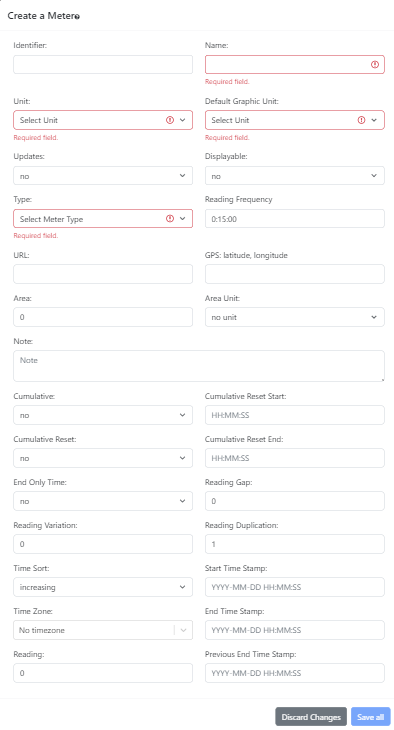
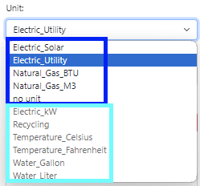
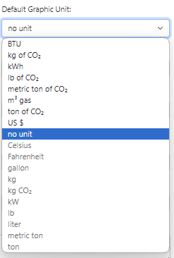

OED Documentation
Meter Creating
Version V1.0.0
Documentation overview
Admin documentation
Information
Site Management
Data Acquisition
Site Installation
User documentation
Documentation versions for this page
These features are only available to select people who oversee the OED site (called admins) so this information is not usually of interest to a general user.
Overview
The admin meter creating popup, shown in the following figure, allows admin users to create a new meter on an OED site. It is accessed from the admin meter viewing page by clicking the "Create a Meter" button near the top of that page. 
All example information shown on this web page is based upon the documentation example.
Usage
As shown in the figure above, the following information can be entered:
- Identifier. This is the "name" of the meter shown when graphing meters. The identifier of a meter must be different from any other meter. If no identifier is provided then the name provided is automatically used.
- Name. This is the name of the meter. It is often the same as the identifier but can differ. There are two values because OED sometimes needs to internally use a special name that is not very user friendly so the identifier is also useful. Sites can also use this name for similar or other reasons when they want something other than what is displayed to the user. The name of a meter must be different from any other meter. This field will be outlined in red until a name is input as is shown in the figures.
- Unit. This dropdown menu allows for the selection of the unit that the meter collects in. This is related but different than the graphing unit used. Some information on the meter unit is given on the documentation example page. The result of clicking this dropdown menu is shown in the following figure.
All units of meter type will be shown and can be selected by clicking it if it is compatible with the default graphic unit. The compatible/selectable units will be at the top of the dropdown menu and the incompatible/non-selectable ones will be at the bottom in grayed out font. In the following figure, the compatible units are in the blue Rectangle and the incompatible units are in the light blue rectangle where the default graphic unit was already set to kWh. 
A meter unit is compatible with the default graphic unit as long as there is a conversion that exists between them. Note that if "no unit" is selected for the default graphic unit then every unit is compatible with that (see first figure of Unit dropdown). Meters can only collect in units of meter type and must be linked by a conversion to a regular unit for graphing. There is a choice of "no unit" on this menu but it is generally not used. If this is selected then the meter can collect data but would be unusable for graphics. The default graphic unit is automatically set to "no unit" when the meter unit is set to that value. It is mostly used internally by OED for automatically creating meters where the unit is not known and then the admin needs to set this unit afterward. If one needs to select a different unit that does not have a conversion to the current unit then selecting "no unit" for the default graphic unit will allow that selection. This field will be outlined in red until a unit is selected as is shown in the figures.
- Default Graphic Unit. This dropdown menu allows for the selection a compatible graphing unit that is used if one is not already selected before this meter is chosen. It allows a site to automatically display a meter in its preferred graphic unit. For example, a site might prefer to graph a meter in US $ (money) even though it collects in kWh. Even if the default graphic unit is the same as the meter unit it must be set separately. A default graphic unit is compatible with the meter unit if a conversion exists between them. As with the meter unit, the compatible/selectable units will be at the top of the dropdown menu and the incompatible/non-selectable ones will be at the bottom in grayed out font. Initially this menu will only have "no unit" as compatible because that is the only compatible unit with a "no unit" meter unit as shown in the following figure.
The dropdown menu when the meter unit is already set to Electric_Utility is shown in the following figure. All units from Celsius and below are not compatible and grayed out. 
If "no unit" is selected then this meter cannot be graphed until a compatible unit is already selected. Given this, admins are encouraged to set a default graphic unit to make it easier for site users to graph meters. This field will be outlined in red until a unit is selected as is shown in the figures.
- Updates. This dropdown menu can be "yes" or "no" (default). If "yes" and OED knows how to automatically acquire readings from this meter then it will be done whenever the site automatically acquires readings from meters. (See information on site installation about automatic meter reading acquisition.) If "no" then no data will automatically be acquired for this meter.
- Displayable. This dropdown menu can be "yes" or "no" (default). "yes" indicates the meter can be seen and graphed by any user and "no" limits the meter visibility and graphing to admins. Note displayable must be "no" if the meter unit is "no unit" and this will be indicated if it is not set this way and changed when saved.
- Type. This dropdown menu allows for setting the type of a meter which is generally the vendor associated with it. As the following figure shows, OED currently knows about a few types of meters and can acquire their data directly. If you want and can to use a meter not on this list then select "OTHER". See the page on data acquisition for more information. Please contact us if you want to use meters that OED does not yet support. This field will be outlined in red until a type is selected as is shown in the figures.
- Reading Frequency. This defines the rate at which OED receives readings from this meter. It impacts the quality of data seen in a line graphic and the estimates of the size of exported data files since it is used to estimate the number of points in the range of time requested. The standard format is HH:MM:SS, e.g., 00:15:00 for 15 minutes, but OED can also accept other formats such as 3 hours or 4 days. The default value is the one on the admin preferences page that will default to 00:15:00 for 15 minutes unless changed by the admin.
- URL. This is the URL used when OED automatically acquires readings during data acquisition. The value is meter type specific and shown on the documentation page about each meter. It can be left blank if not needed by this meter type.
- GPS. This is the GPS location of the meter entered as latitude, longitude (without parentheses). It is used when the values from the meter are placed on a map graphic. More information on using the best GPS value is given on the admin documentation page for creating maps. If blank then there is no GPS value and the meter cannot be placed on a map.
- Area. A non-negative number of the area associated with the meter. It is used when normalizing graphics by area. It has a default value of zero that means this meter cannot be normalized by area. The default value will be used if the input is left blank. This field will be outlined in red until valid value (including blank) is entered if an invalid value is entered.
- Area Unit. This dropdown menu can have the values shown in the following figure. The usable area units are "sq. feet" and "sq. meters". If "no unit" is selected then the field will be red if the area is non-zero because OED needs to know the unit of the area. The default value is "no unit" and this can be used if the area is reset back to zero so the choice is valid.

- Note. This may give additional information about the meter supplied when OED created it or from the admin. Any text can be entered and it can be blank if desired.
- Cumulative. This dropdown menu can be "yes" or "no" (default). If "yes", then the readings on this meter increase with each successive reading and represent the total usage over time. This means that the reading value for a reading's time range is determined by subtracting the value of the previous reading from the current reading. If "no", then the meter is not cumulative and each reading represents the usage for the time range of this reading.
- Cumulative Reset. This dropdown menu can be "yes" or "no" (default). Some cumulative meters periodically reset the total back to zero. If "yes" then this can happen and "no" means it does not. Whenever a reset occurs (the current reading is less than the previous reading) then the value for that reading is directly used. If a reset is detected and is outside the times specified (see next two parameters) then OED will reject all readings in the current batch supplied to OED due to the error.
- Cumulative Reset Start. The earliest time of each day that cumulative reset can occur. By limiting the time that OED accepts a cumulative reset, OED is able to report issues outside that time. The input format is HH:MM:SS.ss, e.g. 10:11:22.33, where the fractions of a second can be omitted, e.g. 12:24:36. If no value is provided (empty text box) then the value will default to 00:00:00 which means the start of the day. The start of the day should be used if one wants to allow a cumulative reset at any time. This value is not used if cumulative reset is no. There are several types of invalid time values that will produce the following errors on input when you save:
- Invalid times such as letters or negative values (-10:00:00 here) will produce the error: "Failed to edit meter with message: "error: invalid input syntax for type time: "-10:00:00" with detail undefined"
- Times that are more than 24 hours so not within a day (24:50:00 here) will produce the error: "Failed to edit meter with message: "error: date/time field value out of range: "24:50:00" with detail undefined"
- If the reset start time is not before the reset end time (start of 10:00:01, end of 10:00:00 here) will produce the error (other provided meter values are included and shown here): "Failed to edit meter with message: "error: new row for relation "meters" violates check constraint "meter_cumulative_reset" with detail Failing row contains (121, zz, , f, f, other, null, null, zz, , 0, f, f, 10:00:01, 10:00:00, 0, 0, 1, increasing, f, 0, 1970-01-01 00:00:00+00:00, 1970-01-01 00:00:00+00:00, 1970-01-01 00:00:00, 152, 158, none, PT15M)."
- Cumulative Reset End. The latest time of each day that cumulative reset can occur. Similar input, errors and usage to Cumulative Reset Start. If no value is provided (empty text box) then the value will default to 23:59:59.999999 meanings the end of the day. The end of the day should be used if one wants to allow a cumulative reset at any time. This value is not used if cumulative reset is no.
- End Only Time. This dropdown menu can be "yes" or "no" (default). "yes" if each reading for this meter only has an end date/time stamp and no start time stamp meaning a reading has two values (reading value and end date/time stamp). "no" if it has three values for each reading (reading value, start date/time stamp and end date/time stamp). OED will automatically convert an end only time reading to have a start time by using the previous reading's time stamp as is normal for these type of reading. OED prefers to get both start and end date/time for each reading since more validation checking is possible. Note that if end only, the gap between a reading and the previous one will always be zero so this warning cannot happen.
- Reading Gap. A non-negative number of how many seconds are considered normal between the end of one reading and the start of the next reading. A value of zero (default value) indicates that there should never be a gap in readings and they always abut each other. OED will issue a warning each time it sees a reading that has a gap greater than the meter allows whenever readings are acquired for this meter.
- Reading Variation. A non-negative number of how may seconds the length of one reading can vary for the length of the next reading (end date/time - start date/time). A value of zero (default value) indicates that all readings should be of the same length. OED will issue a warning each time it sees a reading that has a length variation greater than the meter allows whenever readings are acquired for this meter.
- Reading Duplication. A positive integer of how many times each reading is duplicated when the meter provides values. There are some meters that give the same readings multiple times in a row. Ones that do not should have a value of 1 (default). For example, if the value is 3 then OED reads the first reading of each three readings and ignores the next two. If a non-integer is input then after one saves the error message "Failed to create meter with message: "validation failed with instance.readingDuplication is not of a type(s) integer" will be shown. The number of duplications must be between 1 and 9. If it is outside this range then this field will be outlined in red until a valid value is input.
- Time Sort. This dropdown menu can be "increasing" (default) or "decreasing". If "increasing" then readings are supplied so later ones in time are later in each batch of reading supplied to OED. If "decreasing" then later times come earlier in each batch of reading supplied to OED.
- Start Time Stamp. This is less commonly used. It is the start date/time stamp of the last reading processed in the last batch of readings received by OED for this meter. Normally this value is automatically set by OED each time it processes a batch of data. In unusual circumstances of manual batch loading of data into OED this may need to be set. This value is used when the last processed reading from the last batch is needed to determine information. This happens for end only meters and cumulative meters and also used to generate warnings in some cases about reading variation and gap. The standard format for input is YYYY-MM-DD HH:MM:SS, e.g., 2020-05-22 13:15:45. If no value is provided (empty text field) then the default value of 1970-01-01 00:00:00 is used and OED understands this special value as not having yet read data and will deal with it appropriately.
- End Time Stamp. This is less commonly used. It is the end date/time stamp of the last reading processed in the last batch of readings received by OED for this meter. It is similar to the Start Time Stamp and has the same default.
- Reading. This is less commonly used. It is the reading value of the last reading processed in the last batch of readings received by OED for this meter. It has the default value of zero.
- Time Zone. Select one of the many choices from the dropdown menu. This sets the time zone for this meter and overrides the site preferences time zone value. This is useful if some meters are not in the same time zone as the site default. See the time documentation page for further information.
- Previous End Time Stamp. This is less commonly used. It is similar to the End Time Stamp but for the next to last (penultimate; one before the End Time Stamp) reading processed in the last batch of readings received by OED for this meter. Normally this value is automatically set by OED each time it processes a batch of data. It is only used for meters that have a time zone and honor daylight savings such as eGauge. It is only really important for detecting when time crosses daylight savings. It is similar to the Start Time Stamp and has the same default.
There are two buttons at the bottom of the popup:
- Discard changes. Clicking this button will remove all entries and close the popup. This means the next time that "Create a Meter" is clicked all the values will be the default ones. Clicking outside the popup but within the OED web browser window will have the same effect.
- Save all. Clicking this button will save the new meter with the provided entries.
Details
None